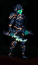
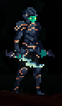

Stats
Vitality
Vitality give Sorun more maximum health and also boost healing effectiveness
Strength
Strength gives bonus damage to weapon which scale with strength. In addition, strength also give some max health

Finesse
Finesse gives bonus damage to weapon which scale with finesse. In addition, finesse also give some max health.

Endurance
Endurance increases maximum stamina to Sorun. In addition, endurance give little max health and little of weapon damage. This stat could only be increase up to 30.
Intellect
Intellect gives bonus damage to weapon which scale with Intellect. In addition, Intellect also gives little maximum health.

Haste
Haste increase stamina regeneration speed. In addition, haste also gives some cooldown reduction, max health, and some weapon damage.
Will
Will cannot be increase by spending hope at the death idol. The only way to gain will is to die and to lose will you need to kill heroic boss. The amount of will you have will affect the ending of the game.
Classes

Soldier
“Trained by the military of Vados. Good all-round fighter. Blocking attacks gives you Soul Energy to use for Abilities. Longsword damage scales with Strength.”
Wizard
“You fight with complex ranged magic. Using a healing Phoenix Feather will give you Soul Energy to use for Abilities. Tome damage scales with Intelligence.”
 

Assassin
“Quick and nimble fighter that favors close range combat. Dodging attacks gives you Soul Energy to use for Abilities. Dagger damage scale with Finesse.”
Blood Knight
“Reckless warrior that rewards aggressive combat styles. You can regain health that was recently lost if you quickly retaliate with an ability.”

Noble
“You worked your way up the chain of lords. An agent of royalty will visit you to sell unique items. Using items gives you Soul Energy to use for Abilities. Halberd damage scales with Strength.”

Sentinel
“A master of arms. You can equip any weapon and shield as long as you have half of the stats required. Parrying gives Soul Energy to use for Abilities. Greatsword damage scales with Strength.”

Acolyte of Death
“You worship death, letting you restore broken Death Idols. These can be used to rest and save. Killing enemies gives you Soul Energy for Abilities. Scythe damage scales with Finesse.”